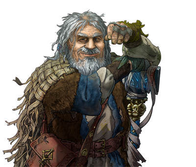

The Battle for Wesnoth UMC Development IDE
The UMC IDE is designed to help streamline the process of making add-on content for Wesnoth.
- Wizards for new campaigns, scenarios, factions, eras, and everything else you might think of. You simply fill in the necessary values and it generates the WML (with nice indentation).
- Front-ends for launching wmltools (like wmllint, wmlscope, wmlindent on files/directories), the Wesnoth game, and the map editor.
- A specialized WML editor with syntax highlighting, tag folding and outline, autocompletion, navigation to macro definitions, and so on.
- Integrated add-on management features that allows uploading or downloading arbitrary addons.
The plugin was made by Timotei Dolean and is available under the EPL License v1.0.
News
| 21 March 2015 | Released version 2.0.3 of the eclipse plugin. |
| 22 August 2012 | Released version 2.0.2 of the eclipse plugin. |
| 29 July 2012 | Released version 2.0.1 of the eclipse plugin and the standalone app. |
| 03 March 2012 | Released version 2.0.0 of the eclipse plugin and the standalone app. |
| 08 May 2011 | Released version 1.0.3 of the eclipse plugin and the standalone app. |
| 17 April 2011 | Released version 1.0.2 of the eclipse plugin and the standalone app. |
| 16 December 2010 | Released version 1.0.1 of the eclipse plugin. |
| 6 November 2010 | Added the 64 bit version for Windows, macOS, and Linux. |
| 5 November 2010 | Initial release of the standalone plugin. |
Download
The current version of the UMC IDE is 2.0.3 and is available in two flavors:
-
Eclipse IDE PluginUse the following link as the update target (copy-paste it into Eclipse's update window):
http://eclipse.wesnoth.org/updates -
Standalone AppMake sure you use the Help → Check for Updates option after launching to update to the latest version.
The application requires the Java runtime environment, so you need to install SUN's Java first (not openJDK or others) - Download Java.
WindowsmacOSLinuxNote: There is no version available for 32 bit macOS. The IDE requires Java SE6 which is only available on 64 bit macOS.
All downloads (including past versions) can also be found here.
Note: If the IDE no longer starts after an update, download and run the post-update patch script provided for your operating system.